Geometrie datThe geometry of data
DBSCAN, příznaky a PCA. Nejprve pozorování, potom rovnice.DBSCAN, features and PCA. Observation first, equations afterwards.
90 minut. Krátké ukázky shlukování a klasifikace, hlavní část věnovaná projekci a redukci rozměru.90 minutes. Brief clustering and classification examples, with most time spent on projection and dimensionality reduction.
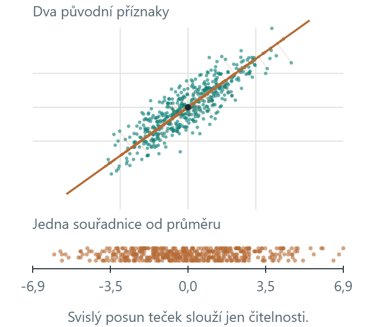
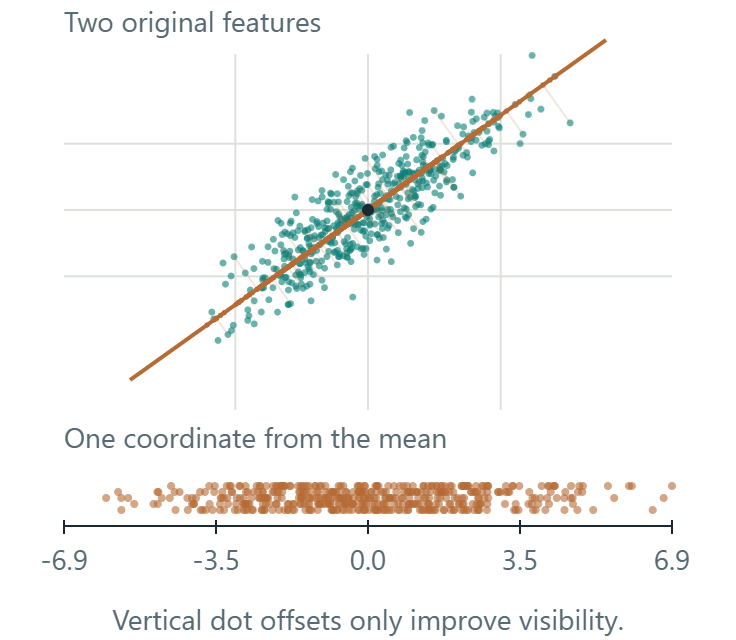
Vysvětlení: Body, příznaky a úlohaExplanation: Points, features and the task
Jeden objekt popíšeme několika čísly, kterým říkáme příznaky. Dvě čísla můžeme nakreslit jako bod v rovině. Obrázek s 64 pixely můžeme podobně chápat jako bod se 64 souřadnicemi, i když takový prostor neumíme celý nakreslit.We describe an object with numbers called features. Two numbers give a point in a plane. In the same way, an image with 64 pixels can be a point with 64 coordinates, although we cannot draw that whole space.
DBSCAN hledá skupiny blízkých bodů. Klasifikace přiřazuje předem známé třídy. PCA hledá nový souřadnicový systém, ve kterém můžeme část souřadnic vynechat. Jde o různé úlohy.DBSCAN finds groups of nearby points. Classification assigns known class labels. PCA finds a new coordinate system in which we can omit some coordinates. These are different tasks.
DBSCAN krok za krokemDBSCAN step by step
Stejných 264 bodů jako v další ukázce. Nejprve prohlédněte okolí, potom sledujte, které body dovolí shluku růst.The same 264 points as in the next example. First inspect a neighbourhood, then follow the points that let a cluster grow.

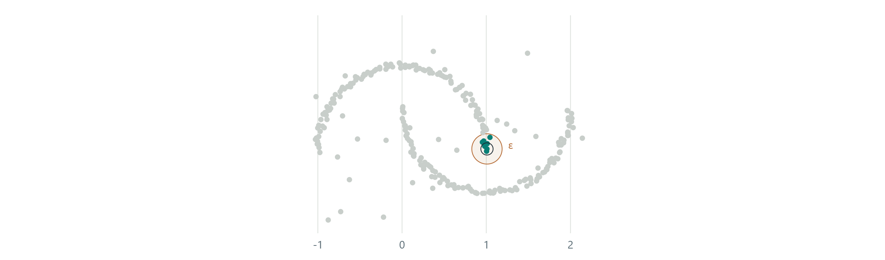
Vysvětlení: Hustota a růst shlukuExplanation: Density and cluster expansion
Představte si kruh kolem vybraného bodu. Jeho poloměr je ε. Pokud kruh obsahuje alespoň min_samples bodů včetně vybraného bodu, tento bod je jádrový. Z jádrového bodu se můžeme přes další jádrové body dostat i do zakřiveného shluku.Imagine a circle around a selected point. Its radius is ε. If it contains at least min_samples points, including the selected point, that point is a core point. Connecting core points allows a cluster to follow a curved shape.
Okrajový bod je blízko jádrového bodu, ale sám nemá dost sousedů. Do shluku se připojí, jeho prostřednictvím však růst nepokračuje. Body, ke kterým se takto žádný shluk nedostane, zůstanou šumem.A border point lies near a core point but has too few neighbours of its own. It joins a cluster without carrying expansion further. Points that no cluster reaches remain noise.
První krok dovoluje vybrat ukázkový jádrový, okrajový či šumový bod. Druhý krok prochází jádrové body prvního shluku v pořadí skutečného výpočtu. Posuvník říká, kolik jader už jsme zpracovali. Šedé body v tomto kroku ještě neoznačujeme za šum. Teprve třetí krok ukazuje výsledek celého DBSCAN.Step one lets you inspect an example core, border or noise point. Step two visits the first cluster’s core points in the actual computation order. Its slider counts processed cores. Grey points at this stage are not yet classified as noise. Step three shows the complete DBSCAN result.
DBSCAN v ruceDBSCAN by hand
Barvy ukazují nalezené shluky. Kliknutím na bod zkontrolujete jeho okolí a počet sousedů.Colours show the clusters found. Click a point to inspect its neighbourhood and neighbour count.
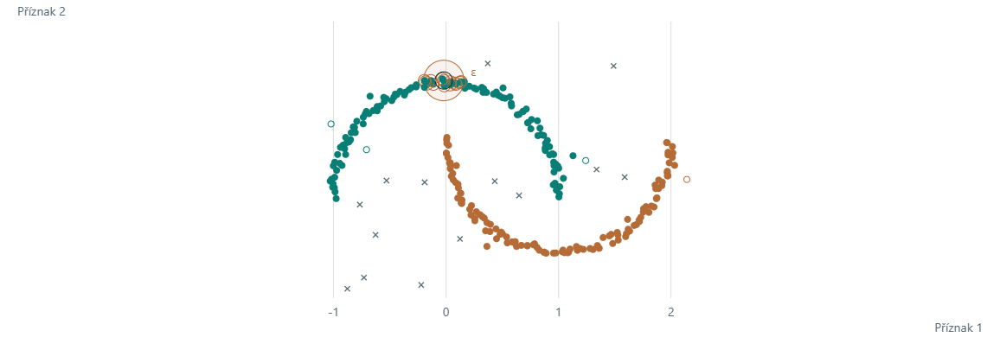
Klikněte na bod. Kruh ukazuje ε-okolí a počet zahrnuje i vybraný bod. Jak velké ε sloučí oba shluky?Click a point. The circle shows its ε-neighbourhood, counting the point itself. How large must ε be to merge both clusters?
Pseudokód: DBSCAN: okolí a růst shlukůPseudocode: DBSCAN: neighbourhoods and cluster expansion
Vstupem jsou body, poloměr ε > 0 a kladné celé min_samples. Okolí zahrnuje všechny body ve vzdálenosti nejvýše ε, včetně bodu samotného.Input is the point set, radius ε > 0 and positive integer min_samples. A neighbourhood includes all points at distance at most ε, including the point itself.
Pro každý bod i:
Nᵢ ← jeho ε-okolí včetně něj samotného
jádro[i] ← počet bodů v Nᵢ ≥ min_samples
Všechny štítky ← NEPROZKOUMÁNO
Pro každý bod i v daném pořadí:
Pokud už má štítek, přeskoč ho
Pokud není jádro: štítek[i] ← ŠUM; pokračuj
Založ nový shluk c a přiřaď do něj i
fronta ← [i]
Dokud fronta není prázdná:
p ← odeber první bod z fronty
Pro každý bod q v Nₚ:
Pokud štítek[q] = NEPROZKOUMÁNO:
štítek[q] ← c
Pokud jádro[q]: přidej q do fronty
Jinak pokud štítek[q] = ŠUM:
štítek[q] ← c
Vrať štítky, jádrové body a počtyFor each point i:
Nᵢ ← its ε-neighbourhood, including itself
core[i] ← number of points in Nᵢ ≥ min_samples
All labels ← UNVISITED
For each point i in the given order:
If it already has a label, skip it
If not core: label[i] ← NOISE; continue
Start a new cluster c and assign i to it
queue ← [i]
While the queue is not empty:
p ← remove the first point from the queue
For each point q in Nₚ:
If label[q] = UNVISITED:
label[q] ← c
If core[q]: append q to the queue
Else if label[q] = NOISE:
label[q] ← c
Return labels, core points and countsDo fronty se dostávají pouze jádrové body. Dříve označený šum se může stát okrajovým bodem shluku. Sporné okrajové body může pořadí průchodu přiřadit různě. Šedé body během animace prvního shluku ještě nepředstavují konečný šum.Only core points enter the queue. A point previously labelled noise can become a cluster border point. Traversal order can change the assignment of ambiguous border points. Grey points during the first cluster’s animation are not final noise labels.
Vysvětlení: Jak číst DBSCANExplanation: How to read DBSCAN
ε určuje, jak daleko od sebe ještě body považujeme za sousedy. min_samples určuje potřebný počet bodů v tomto okolí. Počet shluků zadávat nemusíme. Při větším ε se shluky mohou spojit, při příliš malém ε může mnoho bodů zůstat šumem.ε sets the maximum distance for neighbours. min_samples sets the required count in that neighbourhood. We do not supply a cluster count. A larger ε can merge clusters. A very small ε can leave many points as noise.
Plný bod je jádrový, prázdný kroužek okrajový a křížek je šum. Zde jsou barvy výsledkem shlukování. Šum automaticky neznamená chybné měření ani špatnou odpověď. Záleží na účelu analýzy.A filled point is core, a hollow circle is border, and a cross is noise. Here colours are clustering results. Noise does not automatically mean a measurement error or a wrong answer. Its meaning depends on the analysis.
Změna příznaků a hranice třídFeatures and a class boundary
Původní příznakyOriginal features
Podaří se přímkou oddělit vnitřní body od prstence?Can a straight line separate the inner points from the ring?
Otáčejte a posouvejte přímku. Křížky označují chyby aktuálního rozdělení. Barvy bodů dál ukazují skutečné třídy.Rotate and move the line. Crosses mark the current classification errors. Point colours still show the true classes.
Potom zkuste druhou záložku. Body zůstanou stejné, změníme jejich popis.Then try the second tab. The points stay the same. We change their representation.
160 syntetických bodů. Hranice nastavujete ručně, SVM se zde netrénuje. Počet chyb popisuje jen zobrazené body.160 synthetic points. You set these boundaries manually. This example does not fit an SVM. Error counts describe only the displayed points.
Kružnice v původním prostoruCircle in the original space
Rovina v prostoru s novým příznakemPlane in the expanded feature space
Vlevo kliknutím nebo tažením posuňte střed kružnice. Vpravo tažením otáčejte pohled. Výška roviny mění stejné rozdělení v obou grafech. Na klávesnici použijte šipky po zaměření grafu.Click or drag on the left to move the circle centre. Drag on the right to rotate the view. Plane height changes the same classification in both plots. After focusing a plot, use the arrow keys.
Jaký příznak jsme přidali?Which feature did we add?
Zvolíme střed c = (cₓ, cᵧ). Nový příznak z je druhá mocnina vzdálenosti od tohoto středu. h označuje výšku roviny.Choose a centre c = (cₓ, cᵧ). The new feature z is squared distance from that centre. h is the plane height.
z = h ⇔ (x − cₓ)² + (y − cᵧ)² = h, r = √h
Zobrazení (x, y) do (x, y, z) je explicitní změna příznaků. Vodorovná rovina tak dává kružnici v původním prostoru. Jde o konkrétní geometrický příklad, nikoli obecný výpočet RBF kernelu.Mapping (x, y) to (x, y, z) explicitly changes the features. A horizontal plane then gives a circle in the original space. This is a specific geometric example, not the general computation of an RBF kernel.
160 syntetických bodů. Hranice nastavujete ručně, SVM se zde netrénuje. Počet chyb popisuje jen zobrazené body.160 synthetic points. You set these boundaries manually. This example does not fit an SVM. Error counts describe only the displayed points.
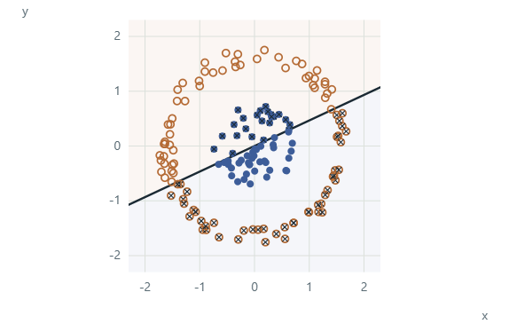
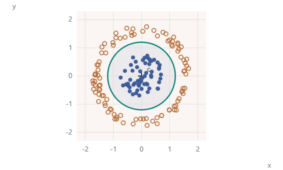
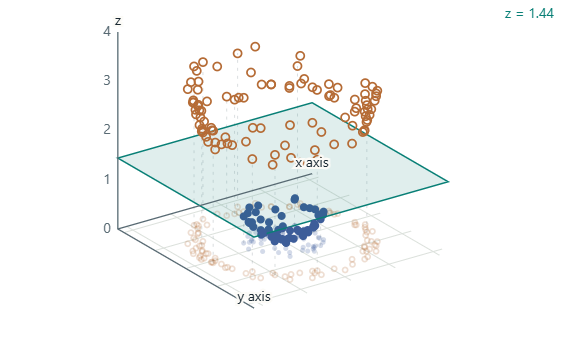
Výchozí příklad: střed (0, 0), výška roviny 1,44. Kružnice a rovina oddělují stejné body.Default example: centre (0, 0), plane height 1.44. The circle and the plane separate the same points.
160 syntetických bodů. Hranice nastavujete ručně, SVM se zde netrénuje. Počet chyb popisuje jen zobrazené body.160 synthetic points. You set these boundaries manually. This example does not fit an SVM. Error counts describe only the displayed points.
Pseudokód: Nový příznak a ručně nastavená hranicePseudocode: A new feature and a manually chosen boundary
Vstupem jsou body (x, y), zvolený střed (cₓ, cᵧ) a výška roviny h > 0. Skutečné třídní štítky používáme jen k vyhodnocení chyb.Input is the points (x, y), chosen centre (cₓ, cᵧ), and plane height h > 0. True class labels are used only to count errors.
Pro každý bod (x, y):
z ← (x − cₓ)² + (y − cᵧ)²
Nový_bod ← (x, y, z)
Pokud z < h: predikce ← vnitřní třída
Jinak: predikce ← vnější třída
Počet_chyb ← počet predikcí odlišných od skutečné třídy
Ve 2D nakresli kružnici s poloměrem √h
Ve 3D nakresli stejné body a rovinu z = h
Při otáčení kamery změň pouze zobrazeníFor each point (x, y):
z ← (x − cₓ)² + (y − cᵧ)²
New_point ← (x, y, z)
If z < h: prediction ← inner class
Otherwise: prediction ← outer class
Error_count ← predictions different from the true class
In 2D, draw a circle with radius √h
In 3D, draw the same points and plane z = h
When rotating the camera, change only the viewTento postup odpovídá našemu klikátku. Hranici nastavujeme ručně, neoptimalizujeme margin a netrénujeme SVM. Explicitně počítaný příznak z není obecný RBF kernel.This procedure matches our interactive example. We set the boundary manually, without optimizing a margin or fitting an SVM. The explicitly computed feature z is not a general RBF kernel.
Vysvětlení: Příznak, hranice a pohledExplanation: Feature, boundary and view
Barva bodu zde označuje známou skutečnou třídu. Křížek označuje chybu právě nastavené hranice. To se liší od DBSCAN, kde barva označovala nalezený shluk a křížek šum.Here a point colour marks its known true class. A cross marks an error made by the current boundary. This differs from DBSCAN, where colour marked a discovered cluster and a cross marked noise.
Ve druhé záložce přidáváme číslo popisující druhou mocninu vzdálenosti od zvoleného středu. Tím se body zvednou do 3D. Výška roviny určuje stejné rozdělení jako kružnice vlevo. Posun středu mění nový příznak. Otáčení kamery mění pouze pohled.The second tab adds a number: squared distance from a chosen centre. This lifts the points into 3D. Plane height defines the same classification as the circle on the left. Moving the centre changes the new feature. Rotating the camera only changes the view.
Hranici v této ukázce řídíte ručně. SVM by ji hledalo optimalizací. Samotné zvednutí bodů nevysvětluje celý algoritmus SVM ani obecný RBF kernel.You control the boundary manually here. An SVM would find a boundary through optimization. Lifting points alone does not explain the whole SVM algorithm or a general RBF kernel.
Projekce krok za krokemProjection step by step
Každý bod má dvě souřadnice. Postupně ukážeme, co se stane, když si ponecháme jen jeho polohu podél zvolené osy.Each point has two coordinates. Follow what happens when we keep only its position along one chosen axis.
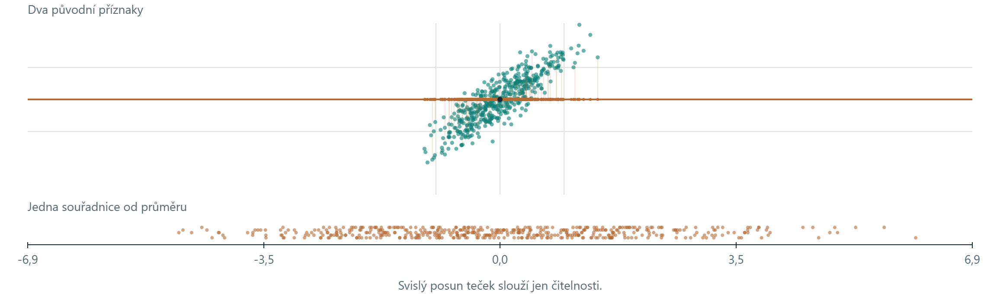
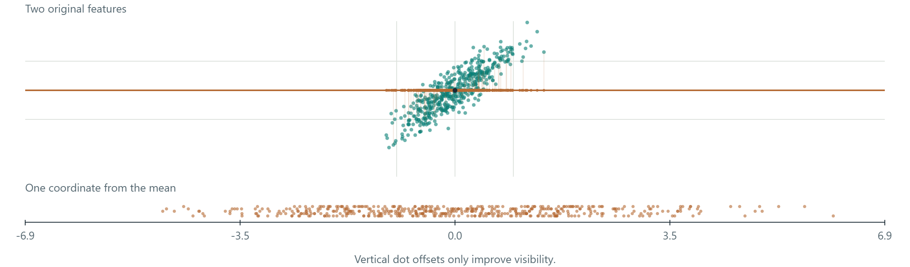
Vysvětlení: Proč hledáme směrExplanation: Why we search for a direction
PCA znamená analýzu hlavních komponent. Zde chceme dvě souřadnice bodu nahradit jedinou. Zvolíme osu a každý bod na ni kolmo promítneme, podobně jako kdyby na osu vrhal stín. Uložíme už jen jeho polohu podél osy.PCA stands for principal component analysis. Here we want to replace two coordinates with one. Choose an axis and project each point onto it at a right angle, as if the point cast a shadow onto the axis. We store its position along that axis.
Vhodná osa zachová velkou část původního rozptylu bodů. Kolmou vzdálenost od osy zahodíme. PCA nezkoumá, kterou číslici nebo třídu bod představuje. Hledá směr podle proměnlivosti dat.A useful axis retains much of the original spread. We discard the perpendicular distance from the axis. PCA does not inspect which digit or class a point represents. It chooses a direction using variation in the data.
PCA: otočná osaPCA: a rotating axis
Každá tečka má dva číselné příznaky. Oranžová osa jí přiřadí jedinou souřadnici, kterou ukazuje spodní graf.Each dot has two numerical features. The orange axis assigns it one coordinate, shown in the lower plot.
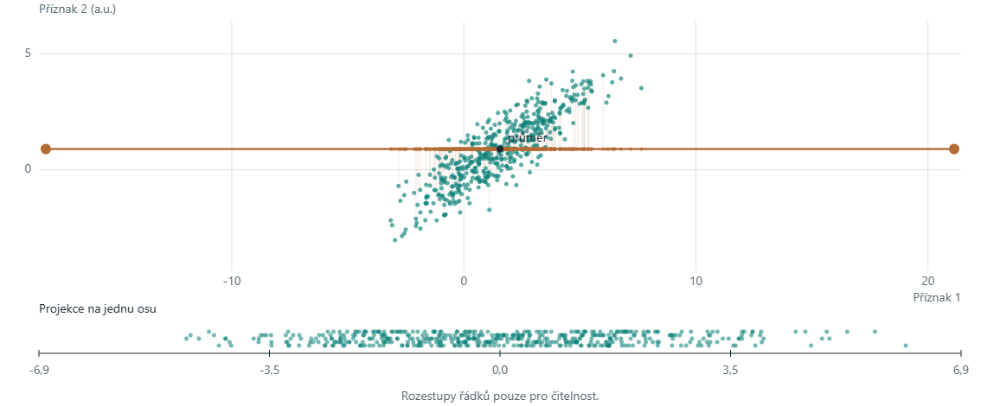
Vektory mají délku 1. Obě šipky zvětšujeme stejně pro čitelnost. λ je rozptyl v příslušném směru.The vectors have unit length. Both arrows share one display scale for readability. λ is the variance along its direction.
λ₁ = λ₂: zobrazená kolmá dvojice je pouze jedna z rovnocenných voleb.λ₁ = λ₂: the displayed perpendicular pair is only one of many equally valid choices.
480 syntetických bodů. Měřítko spodní projekce se při otáčení nemění. Variance je výběrový rozptyl souřadnic po projekci.480 synthetic points. The lower projection scale stays fixed as the axis rotates. Variance is the sample variance of the projected coordinates.
Vysvětlení: Tečka, projekce a varianceExplanation: Point, projection and variance
Horní graf ukazuje původní body a jejich kolmé projekce na oranžovou osu. Spodní graf rozbalí souřadnice projekcí na vodorovnou stupnici. Malé svislé rozestupy spodních teček slouží jen čitelnosti, žádný další příznak neznamenají.The upper plot shows original points and their perpendicular projections onto the orange axis. The lower plot lays the projection coordinates out on a horizontal scale. Small vertical offsets between lower dots only improve visibility. They do not encode another feature.
Variance měří rozptyl souřadnic podél zvolené osy. Procento vedle ní porovnává tento rozptyl s celkovým rozptylem obou původních příznaků. Nejprve zkuste maximum najít ručně. Pak odkryjte vlastní vektory a porovnejte svůj směr s u₁.Variance measures the spread of coordinates along your chosen axis. The percentage compares it with the total variance of both original features. First search for the maximum manually. Then reveal the eigenvectors and compare your direction with u₁.
Při otočení osy o 180° se znaménka souřadnic obrátí, ale jejich rozptyl zůstane stejný.Turning the axis by 180° reverses the coordinate signs while leaving their variance unchanged.
Co zůstane po projekciWhat remains after projection
Tři grafy porovnávají různé směry projekce stejného mraku. Procenta vyjadřují zachovaný rozptyl, nikoli úspěšnost rozpoznávání.The three plots compare projection directions for the same cloud. The percentages measure retained variance, not recognition accuracy.
Kolmý směrPerpendicular direction
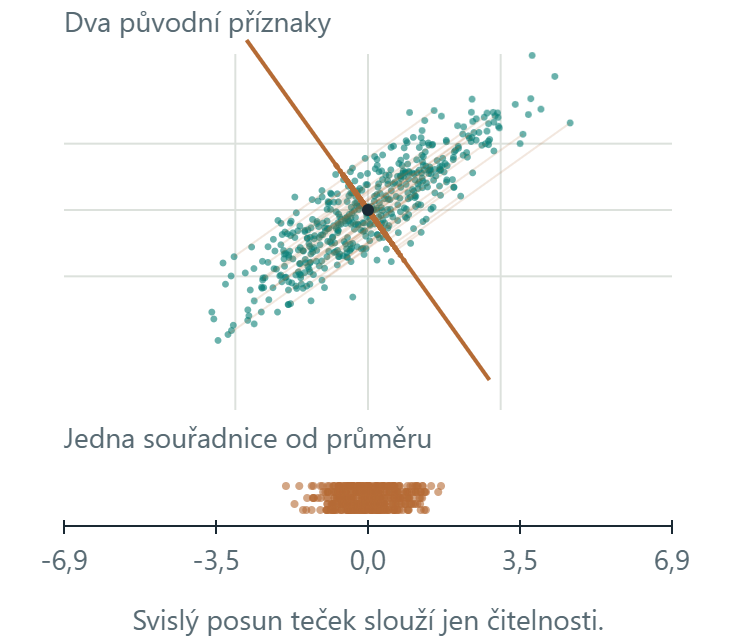
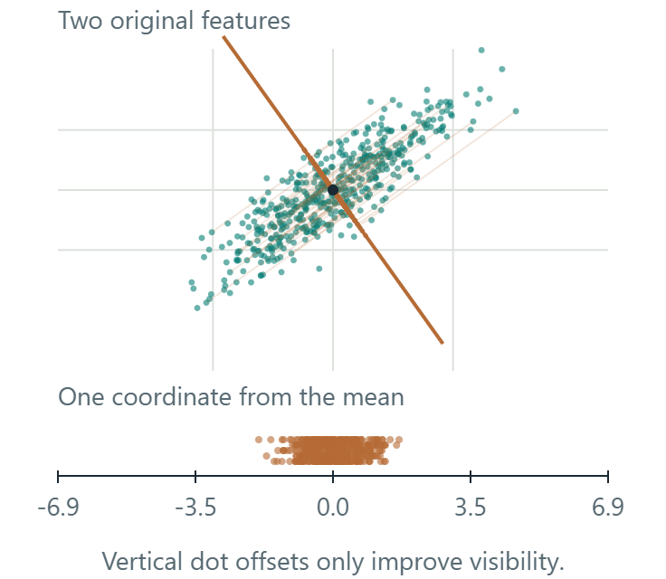
Mezilehlý směrIntermediate direction
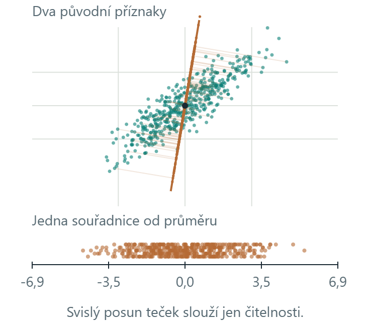
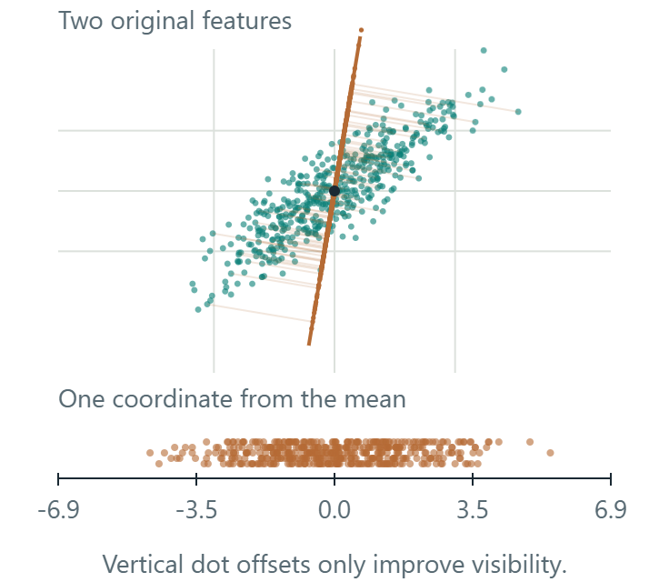
První hlavní směrFirst principal direction
Ve všech třech grafech je stejných 480 bodů a stejné měřítko. Dole jsou jejich jednorozměrné souřadnice. Zelené původní body zůstávají na místě, oranžově ukazujeme projekce.All three plots use the same 480 points and the same scale. Their one-dimensional coordinates appear below. Green original points stay in place. Orange points show projections.
Po projekci už neznáme kolmou odchylku. Při návratu do 2D proto umístíme bod přímo na osu. Procento vyjadřuje zachovaný rozptyl.Projection discards the perpendicular displacement. To return to 2D, we therefore place a point directly on the axis. The percentage measures retained variance.
Vysvětlení: Co znamenají tři obrázkyExplanation: What the three pictures mean
Vlevo zvolený směr ponechá projekce blízko sebe. Prostřední směr je více roztáhne. Vpravo osa sleduje dlouhý směr mraku a ponechá v tomto příkladu nejvíc rozptylu. Body se neučí ani nepřesouvají do nových tříd. Mění se způsob, jak ze dvou souřadnic ponechat jednu.The left direction keeps projections close together. The middle direction spreads them further apart. On the right, the axis follows the long direction of the cloud and retains the most variance in this example. Points are not learning or moving into new classes. We are changing how we keep one coordinate from two.
Dva původně různé body mohou po projekci skončit na stejné pozici, pokud se lišily pouze v kolmém směru. Z jediné uložené souřadnice jejich původní polohu přesně neobnovíme. Vlevo používáme druhý hlavní směr, uprostřed osu otočenou o 45° od prvního hlavního směru a vpravo první hlavní směr. Všechny hodnoty počítáme ze stejných 480 bodů jako v klikátku. Tlačítko pod grafem přenese jeho osu do hlavní ukázky.Two different original points can project to the same position if they differed only in the perpendicular direction. Their one stored coordinate cannot recover the original positions exactly. The left plot uses PC2. The middle axis is 45° from PC1. The right plot uses PC1. All values use the same 480 points as the main interactive example. The button below a plot opens its axis in that example.
Kdy větší variance nepomůžeWhen higher variance does not help
- Kruhový mrak: mnoho směrů může být stejně dobrých.A circular cloud can have many equally good directions.
- Odlehlý bod: může změnit nejlepší směr.An outlier can change the best direction.
- Dvě třídy: důležitá informace může být v málo proměnném směru.Two classes can differ mainly along a low-variance direction.
Vraťte se k mraku a odhadněte výsledek před stisknutím „Ukázat maximum“.Return to the cloud and predict the result before choosing “Show maximum”.
Vysvětlení: Co maximum rozptylu nezaručujeExplanation: What maximum variance does not guarantee
U kruhového mraku jsou všechny směry stejně proměnlivé, takže neexistuje jediná nejlepší osa. Odlehlý bod může do rozptylu přispět velkou hodnotou a hlavní směr vychýlit. Rozptyl počítá se čtverci vzdáleností od průměru.In a circular cloud, all directions have the same variation, so there is no unique best axis. An outlier can contribute a large amount of variance and change the principal direction. Variance uses squared distances from the mean.
V ukázce dvou tříd může velký vodorovný rozptyl překrýt malé, ale důležité svislé oddělení tříd. PCA při hledání osy třídní štítky nepoužívá. Zachování rozptylu proto samo nezaručuje dobrou klasifikaci.In the two-class example, large horizontal variation can dominate a small but important vertical class separation. PCA does not use class labels to choose its axis. Preserving variance alone therefore does not guarantee good classification.
Centrování a jednotkyCentring and units
×8 znamená: každou hodnotu druhého příznaku násobíme osmi. Bod (2, 3) se změní na (2, 24). První příznak i počet bodů zůstávají stejné. Napodobujeme tím změnu jednotek jednoho měření.×8 means multiplying every value of the second feature by eight. Point (2, 3) becomes (2, 24). The first feature and point count stay the same. This simulates changing the units of one measurement.
Kovariance: význam a výpočet na čtyřech bodechCovariance: meaning and a four-point calculation
U každého bodu odečteme průměr obou příznaků. Když mají obě odchylky často stejné znaménko, součiny jsou kladné a příznaky mají kladnou kovarianci. Opačná znaménka dávají záporné součiny.Subtract both feature means at every point. When the deviations often have the same sign, their products are positive and covariance is positive. Opposite signs give negative products.
| x | y | x − 2,5 | y − 2 | (x − 2,5)(y − 2) |
|---|---|---|---|---|
| 1 | 1 | −1,5 | −1 | 1,5 |
| 2 | 2 | −0,5 | 0 | 0 |
| 3 | 2 | 0,5 | 0 | 0 |
| 4 | 3 | 1,5 | 1 | 1,5 |
Dělíme n − 1 = 3, stejně jako u výběrového rozptylu. Kovariance příznaku se sebou samým je jeho rozptyl. Pro tyto čtyři body vyjde matice C = [[5/3, 1], [1, 2/3]].We divide by n − 1 = 3, as with sample variance. A feature’s covariance with itself is its variance. These four points give C = [[5/3, 1], [1, 2/3]].
Při y′ = 8y se také odchylka od průměru násobí osmi. Proto cov(x, y′) = 8 cov(x, y) a var(y′) = 64 var(y). Zde C′ = [[5/3, 8], [8, 128/3]]. Standardizace druhý příznak znovu vydělí jeho směrodatnou odchylkou.With y′ = 8y, deviation from the mean also grows by eight. Thus cov(x, y′) = 8 cov(x, y), while var(y′) = 64 var(y). Here C′ = [[5/3, 8], [8, 128/3]]. Standardization divides the second feature by its standard deviation again.
Vektory mají délku 1. Obě šipky zvětšujeme stejně pro čitelnost. λ je rozptyl v příslušném směru.The vectors have unit length. Both arrows share one display scale for readability. λ is the variance along its direction.
λ₁ = λ₂: zobrazená kolmá dvojice je pouze jedna z rovnocenných voleb.λ₁ = λ₂: the displayed perpendicular pair is only one of many equally valid choices.
Střed osy odpovídá průměru dat. Změna jednotek může otočit hlavní směr. Zde standardizujeme na výběrovou směrodatnou odchylku 1.The axis passes through the data mean. Changing units can rotate the principal direction. Here we standardize each feature to sample standard deviation 1.
Vysvětlení: Centrování a standardizaceExplanation: Centring and standardization
Přepínač ×8 násobí každou hodnotu druhého příznaku osmi, například bod (2, 3) nahradí bodem (2, 24). Představuje změnu jednotek jednoho měření. První příznak a počet bodů ponecháváme stejné.The ×8 toggle multiplies every value of the second feature by eight, for example replacing point (2, 3) with (2, 24). It represents a change of units for one measurement. The first feature and point count stay the same.
Kovarianci spočteme jako součet součinů odchylek obou příznaků od jejich průměrů, vydělený n − 1. Je kladná, když se odchylky často pohybují stejným směrem, a záporná, když mají často opačná znaménka. Kovariance příznaku se sebou samým je rozptyl. Nulová kovariance sama nezaručuje nezávislost. Na slidu lze rozbalit úplný výpočet na čtyřech bodech.Covariance is the sum of products of both features’ deviations from their means, divided by n − 1. It is positive when deviations often move together, and negative when they often have opposite signs. A feature’s covariance with itself is variance. Zero covariance alone does not guarantee independence. Expand the slide’s four-point example for the full calculation.
Centrování odečítá průměr každého příznaku. Tím zvolíme nový počátek souřadnic. PCA pak hledá směry proměnlivosti kolem průměru. Samotné odečtení průměru kovarianci ani hlavní směry nemění.Centring subtracts each feature mean. This chooses a new coordinate origin. PCA then describes variation around the mean. Subtracting the mean alone does not change covariance or principal directions.
Vynásobením druhého příznaku osmi zvětšíme jeho rozptyl 64krát. Tím může převážit v hledání hlavní osy. Standardizace nejprve odečte průměr a potom vydělí směrodatnou odchylkou. Zde tak každý příznak dostane výběrový rozptyl 1. Je to změna měřítka, ne přidání nových dat.Multiplying feature two by eight multiplies its variance by 64. It can then dominate the principal direction. Standardization subtracts the mean and divides by the standard deviation. Here each feature gets sample variance 1. This rescales existing observations. It does not add observations.
Projekce a varianceProjection and variance
Máme n bodů xᵢ ve 2D, jejich průměr μ a jednotkový směr u.Let xᵢ be one of n points in 2D, μ their mean, and u a unit direction.
zᵢ je jedna souřadnice bodu po projekci. Centrování dává průměr projekcí 0.zᵢ is the point’s one-dimensional projection coordinate. Centring makes the mean projection zero.
To je číslo Variance pod mrakem. Dělíme n − 1, nikoli n. Největší V(u) hledáme mezi směry stejné jednotkové délky.This is the Variance value below the cloud. We divide by n − 1, not n. We maximize V(u) over directions of unit length.
Pseudokód: Projekce a variance při otáčení osyPseudocode: Projection and variance while rotating an axis
Vstupem je n bodů v rovině, n > 1, a úhel θ. V této ukázce každý bod dostane jedinou souřadnici zᵢ.Input is n points in a plane, n > 1, and angle θ. This example assigns one coordinate zᵢ to each point.
μ ← průměr bodů
u ← (cos θ, sin θ)
Pro každý bod xᵢ:
zᵢ ← uᵀ (xᵢ − μ)
x̂ᵢ ← μ + zᵢ u
Variance ← součet zᵢ² / (n − 1)
Celkový_rozptyl ← rozptyl příznaku 1 + rozptyl příznaku 2
Pokud Celkový_rozptyl > 0:
Zachováno ← Variance / Celkový_rozptyl
Jinak: zachovaný podíl není definovaný
Nakresli původní body, projekce a souřadnice zᵢμ ← mean of the points
u ← (cos θ, sin θ)
For each point xᵢ:
zᵢ ← uᵀ (xᵢ − μ)
x̂ᵢ ← μ + zᵢ u
Variance ← sum of zᵢ² / (n − 1)
Total_variance ← variance of feature 1 + variance of feature 2
If Total_variance > 0:
Retained ← Variance / Total_variance
Otherwise: the retained fraction is undefined
Draw original points, projections and coordinates zᵢDvojice (cos θ, sin θ) má jednotkovou délku. Při ručním otáčení porovnáváme skutečné směry, ne různě dlouhé vektory. Při výpočtu používáme všechny body, i když pro čitelnost nekreslíme všechny spojnice.The pair (cos θ, sin θ) has unit length. Manual rotation compares directions, rather than vectors of different lengths. Every point enters the calculation, even when we omit some projection lines for readability.
Vysvětlení: Jak přečíst rovniceExplanation: How to read the equations
xᵢ jsou dvě souřadnice i-tého bodu, μ je průměr všech bodů a u je jednotkový směr osy. Výraz uᵀ(xᵢ − μ) je skalární součin. Vrátí jediné číslo zᵢ: polohu bodu na ose měřenou od průměru.xᵢ contains the two coordinates of point i, μ is the mean of all points, and u is a unit direction. The expression uᵀ(xᵢ − μ) is a dot product. It returns one number zᵢ: the point position along the axis, measured from the mean.
Součet čtverců zᵢ vydělíme n − 1, kde n je počet bodů. Dostaneme výběrovou varianci V(u), tedy číslo z klikátka. Podmínka ‖u‖ = 1 zajišťuje, že porovnáváme směry ve stejném měřítku. Delší vektor by souřadnice uměle násobil.We sum the squared zᵢ values and divide by n − 1, where n is the point count. This gives sample variance V(u), the value in the interactive plot. Requiring ‖u‖ = 1 compares directions at the same scale. A longer vector would multiply the coordinates artificially.
Kovariance a výpočet PC1Covariance and the PC1 calculation
První hlavní směr vypočteme z kovarianční matice. Jednotlivé kroky níže používají konkrétní hodnoty: buď aktuální mrak z klikátka, nebo čtyři body vhodné k ručnímu výpočtu.We calculate the first principal direction from the covariance matrix. The steps below use concrete values: either the current interactive cloud or four points suitable for a hand calculation.
Souhrn výpočtuCalculation summary
Pseudokód: PCA: učení modeluPseudocode: PCA: fitting the model
Vstupem je pouze trénovací matice X s n řádky (objekty) a d sloupci (příznaky), n > 1. Model uloží průměr, hlavní směry a jejich rozptyly.Input is the training matrix X only, with n rows (objects) and d columns (features), n > 1. The model stores the mean, principal directions and their variances.
μ ← průměr řádků X
A ← od každého řádku X odečti μ
C ← Aᵀ A / (n − 1)
(λⱼ, uⱼ) ← vlastní dvojice symetrické matice C
Seřaď dvojice podle λ₁ ≥ λ₂ ≥ … ≥ λ_d
Každý uⱼ má délku 1, různé směry jsou kolmé
U ← matice se sloupci u₁, …, u_d
Pokud součet λ > 0:
rⱼ ← λⱼ / součet všech λ
Jinak: podíly rozptylu nejsou definované
Vrať model (μ, U, λ, r)μ ← mean of the rows of X
A ← subtract μ from each row of X
C ← Aᵀ A / (n − 1)
(λⱼ, uⱼ) ← eigenpairs of symmetric matrix C
Sort pairs so that λ₁ ≥ λ₂ ≥ … ≥ λ_d
Each uⱼ has length 1; different directions are orthogonal
U ← matrix with columns u₁, …, u_d
If the sum of λ is positive:
rⱼ ← λⱼ / sum of all λ
Otherwise: variance fractions are undefined
Return model (μ, U, λ, r)Toto je výklad přes kovarianci. U číslic jsme ekvivalentní model spočítali pomocí SVD centrované trénovací matice: pravé singulární vektory dávají směry a λⱼ = sⱼ² / (n − 1). Prohlížeč už tento model načítá hotový. Posuvník ho znovu neučí.This explanation uses covariance. For digits, we computed the equivalent model using the SVD of the centred training matrix: right singular vectors give the directions and λⱼ = sⱼ² / (n − 1). The browser loads that precomputed model. The slider does not fit it again.
Vysvětlení: Matice, vlastní vektor a vlastní čísloExplanation: Matrix, eigenvector and eigenvalue
Krokovaný výpočet začíná průměrem a odchylkami, pokračuje konkrétní kovarianční maticí a jejími vlastními čísly. V dalším kroku z rovnice (C − λ₁I)v = 0 získáme směr a vydělíme ho jeho délkou. Nakonec ověříme Cu₁ = λ₁u₁. Nabídka umožňuje použít aktuálních 480 bodů nebo jednoduchý soubor (1,1), (2,2), (3,2), (4,3).The step-by-step calculation begins with the mean and deviations, then computes the covariance matrix and eigenvalues. Next, (C − λ₁I)v = 0 gives a direction, which we divide by its length. Finally, verify Cu₁ = λ₁u₁. Select either the current 480 points or the simple set (1,1), (2,2), (3,2), (4,3).
Na diagonále kovarianční matice C jsou rozptyly obou příznaků. Mimodiagonální hodnota popisuje, jak se jejich odchylky od průměru mění společně. Z této matice vypočteme hlavní směry.The diagonal of covariance matrix C contains the variances of the two features. The off-diagonal value describes how their deviations from the mean vary together. We use this matrix to compute the principal directions.
Jednotkový vlastní vektor u₁ určuje první hlavní směr. Vlastní číslo λ₁ je variance projekcí všech bodů do tohoto směru. u₂ určuje kolmý druhý směr a λ₂ jeho varianci. Jde o stejné složky, které později použijeme u obrázků, jen zde máme dvě původní souřadnice místo 64.Unit eigenvector u₁ gives the first principal direction. Eigenvalue λ₁ is the variance of all point projections along it. u₂ gives the perpendicular second direction, and λ₂ gives its variance. These are the same kind of components used later for images. Here we start with two coordinates instead of 64.
Koeficient zᵢ popisuje jeden bod. Vlastní číslo λ popisuje proměnlivost projekcí celého souboru bodů. Při λ₁ = λ₂ je více rovnocenných voleb hlavních os.A score zᵢ describes one point. An eigenvalue λ describes variation in projections across the dataset. When λ₁ = λ₂, several choices of principal axes are equally valid.
PCA a obrázkyPCA and images
Jeden obrázek 8 × 8 je bod s 64 souřadnicemi: hodnotami pixelů. Složky PCA jsou nové souřadnice vytvořené z jejich vážených kombinací.One 8 × 8 image is a point with 64 coordinates: its pixel values. PCA components are new coordinates formed from weighted combinations of those values.
Čísla 0–9 jsou skutečné třídy. Zde zkoušíme rekonstrukci, nikoli rozpoznávání. Rozptyl, MSE a čitelnost pro člověka jsou různá kritéria.Labels 0–9 are true classes. This is reconstruction, not digit recognition. Variance, MSE and human readability are different criteria.
podíl rozptyluvariance share:
z₁ =
podíl rozptyluvariance share:
z₂ =
podíl rozptyluvariance share:
z₃ =
Průměr μ i vzory uⱼ jsou společné pro všechny obrázky. Koeficient zⱼ říká, kolik daného vzoru pro vybraný obrázek přidat nebo odečíst. Změňte obrázek v nabídce: vzory zůstanou stejné, koeficienty se změní.Mean μ and patterns uⱼ are shared by all images. Score zⱼ says how much of that pattern to add or subtract for the selected image. Choose another image: the patterns stay the same, but the scores change.
Ukazujeme první tři ze 64 směrů. Rekonstrukce vpravo používá všech k zvolených směrů. Každý vzor přiřazuje váhu každému pixelu, takže k = 1 stále vytváří celý obrázek 8 × 8.We show the first three of 64 directions. The reconstruction on the right uses all k selected directions. Each pattern assigns a weight to every pixel, so k = 1 still produces a whole 8 × 8 image.
PCA se naučilo na 1 437 trénovacích obrázcích. Příklady patří mezi 360 odložených obrázků. MSE v záložce Rekonstrukce používá 10 × 64 pixelů, před ořezáním hodnot pro zobrazení.PCA was fitted on 1,437 training images. Examples come from 360 held-out images. MSE in the Reconstruction tab uses 10 × 64 pixels, before display clipping.
Pseudokód: PCA: učení modeluPseudocode: PCA: fitting the model
Vstupem je pouze trénovací matice X s n řádky (objekty) a d sloupci (příznaky), n > 1. Model uloží průměr, hlavní směry a jejich rozptyly.Input is the training matrix X only, with n rows (objects) and d columns (features), n > 1. The model stores the mean, principal directions and their variances.
μ ← průměr řádků X
A ← od každého řádku X odečti μ
C ← Aᵀ A / (n − 1)
(λⱼ, uⱼ) ← vlastní dvojice symetrické matice C
Seřaď dvojice podle λ₁ ≥ λ₂ ≥ … ≥ λ_d
Každý uⱼ má délku 1, různé směry jsou kolmé
U ← matice se sloupci u₁, …, u_d
Pokud součet λ > 0:
rⱼ ← λⱼ / součet všech λ
Jinak: podíly rozptylu nejsou definované
Vrať model (μ, U, λ, r)μ ← mean of the rows of X
A ← subtract μ from each row of X
C ← Aᵀ A / (n − 1)
(λⱼ, uⱼ) ← eigenpairs of symmetric matrix C
Sort pairs so that λ₁ ≥ λ₂ ≥ … ≥ λ_d
Each uⱼ has length 1; different directions are orthogonal
U ← matrix with columns u₁, …, u_d
If the sum of λ is positive:
rⱼ ← λⱼ / sum of all λ
Otherwise: variance fractions are undefined
Return model (μ, U, λ, r)Toto je výklad přes kovarianci. U číslic jsme ekvivalentní model spočítali pomocí SVD centrované trénovací matice: pravé singulární vektory dávají směry a λⱼ = sⱼ² / (n − 1). Prohlížeč už tento model načítá hotový. Posuvník ho znovu neučí.This explanation uses covariance. For digits, we computed the equivalent model using the SVD of the centred training matrix: right singular vectors give the directions and λⱼ = sⱼ² / (n − 1). The browser loads that precomputed model. The slider does not fit it again.
Vysvětlení: Co je složka u obrázkuExplanation: What a component means for an image
Obrázek 8 × 8 přečteme jako seznam 64 hodnot pixelů. Je tedy jedním bodem v 64rozměrném prostoru. PCA naučí nové kolmé směry. Každý směr lze znovu uspořádat do mřížky 8 × 8 a zobrazit jako vzor vah pro jednotlivé pixely.Read an 8 × 8 image as a list of 64 pixel values. It is one point in a 64-dimensional space. PCA learns new perpendicular directions. We can reshape each direction into an 8 × 8 grid to display its pattern of pixel weights.
Složka tak může ovlivnit kterýkoli pixel. Počet k říká, kolik prvních nových souřadnic pro každý obrázek ponecháme. Koeficient zⱼ říká, kolik j-tého vzoru u daného obrázku přidat nebo odečíst. Přibližný obrázek skládáme z průměrného obrázku a těchto vážených vzorů. Průměr μ počítáme ze všech trénovacích obrázků společně, bez rozdělení podle tříd.A component can affect any pixel. The number k tells us how many leading new coordinates we keep per image. Score zⱼ says how much of pattern j to add or subtract for that image. We reconstruct an approximation from the mean image and these weighted patterns. Mean μ comes from all training images together, without grouping them by class.
Při k = 0 ukazují všechny rekonstrukce stejný trénovací průměr. Při k = 1 používají stále všech 64 pixelových pozic, ale liší se jen jedním koeficientem. Při k = 64 obnovíme původní hodnoty až na numerické zaokrouhlení. Čísla 0–9 pod obrázky jsou skutečné třídy, nikoli výstup klasifikátoru.At k = 0, every reconstruction is the same training mean. At k = 1, all 64 pixel positions still exist, but images differ through only one score. At k = 64, reconstruction recovers the original values up to numerical rounding. Labels 0–9 below images are true classes, not classifier outputs.
Zachovaný rozptyl vychází z trénovacích dat. MSE (Mean Squared Error, průměrná kvadratická chyba) průměruje čtverce rozdílů pixelů deseti zobrazených odložených obrázků. Čitelnost posuzuje člověk. Tato tři kritéria měří různé věci. MSE zde používá hodnoty pixelů 0 až 16 a počítá se před ořezáním pro zobrazení.Retained variance comes from training data. MSE (mean squared error) averages squared pixel differences for the ten displayed held-out images. Readability is a human judgement. These three criteria measure different things. MSE here uses pixel values from 0 to 16 and is computed before display clipping.
Vlastní číslo λⱼ je rozptyl koeficientů zⱼ napříč trénovacími obrázky. Procento pod jedním vzorem v galerii je jeho podíl na celkovém trénovacím rozptylu. Zachovaný rozptyl k složek získáme součtem prvních k takových podílů.Eigenvalue λⱼ is the variance of scores zⱼ across training images. The percentage below one gallery pattern is its share of total training variance. The retained variance of k components is the sum of the first k shares.
Kolik složek ponechat?How many components?
Posuvník propojuje oba grafy s rekonstrukcí stejného obrázku. Ponecháváme prvních k složek, seřazených podle trénovacího rozptylu.One slider links both plots to the reconstruction of the same image. We keep the first k components, ordered by training variance.
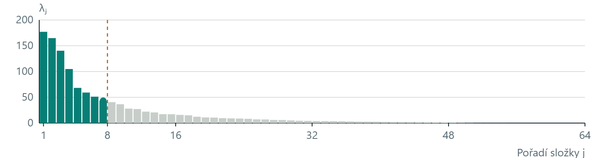
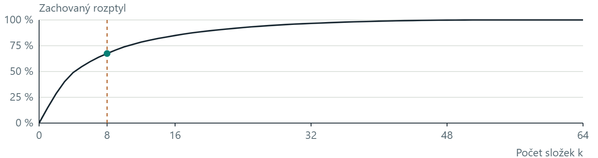
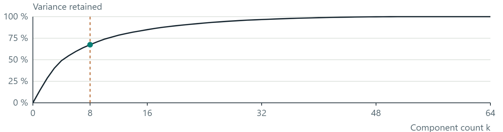
k =
Zachovaný trénovací rozptylTraining variance retained
MSE vybraného obrázkuSelected-image MSE
Zelený bod v dolním grafu ukazuje součet podílů prvních k složek. MSE vpravo porovnává 64 pixelů právě vybraného obrázku.The green point in the lower plot shows the total fraction for the first k components. MSE on the right compares the 64 pixels of the selected image.
Model: 1 437 trénovacích obrázků. Ukázkové obrázky jsou odložené. Změna obrázku nemění vlastní čísla. Pro klasifikaci vybírejte k na validaci, ne podle závěrečného testu.Model: 1,437 training images. Example images are held out. Changing the image leaves the eigenvalues unchanged. For classification, choose k using validation, not the final test.
Číselné hodnoty grafůNumerical plot values
| j | λⱼ | Podíl složkyComponent fraction | KumulativněCumulative | StavStatus |
|---|
Pseudokód: PCA: počet složek a rekonstrukcePseudocode: PCA: component count and reconstruction
Vstupem je naučený model, jeden odložený obrázek x s d = 64 pixely a počet k od 0 do 64. Symbol zⱼ označuje souřadnici obrázku v j-tém naučeném směru.Input is a fitted model, one held-out image x with d = 64 pixels, and k from 0 to 64. Symbol zⱼ denotes the image coordinate along learned direction j.
Při změně posuvníku nebo obrázku:
x̂ ← μ
Pro j od 1 do k:
zⱼ ← uⱼᵀ (x − μ)
x̂ ← x̂ + zⱼ uⱼ
zachovaný_podíl ← součet r₁, …, r_k
MSE ← součet (x_pixel − x̂_pixel)² / d
V horním grafu zvýrazni prvních k sloupců
V dolním grafu označ (k, zachovaný_podíl)
Zobraz x̂ jako mřížku 8 × 8
Pouze pro zobrazení omez hodnoty na 0 až 16When the slider or selected image changes:
x̂ ← μ
For j from 1 to k:
zⱼ ← uⱼᵀ (x − μ)
x̂ ← x̂ + zⱼ uⱼ
retained_fraction ← sum of r₁, …, r_k
MSE ← sum of (x_pixel − x̂_pixel)² / d
Highlight the first k bars in the upper plot
Mark (k, retained_fraction) in the lower plot
Display x̂ as an 8 × 8 grid
Limit values to 0 through 16 for display onlyPři k = 0 je součet prázdný a rekonstrukce se rovná průměru. Tlačítka 90 %, 95 % a 99 % hledají nejmenší k, jehož kumulativní podíl dosáhne alespoň daného prahu. MSE se počítá před ořezáním zobrazení. Rozptyl patří trénovací sadě, MSE právě vybranému obrázku.At k = 0, the sum is empty and reconstruction equals the mean. The 90%, 95% and 99% buttons find the smallest k whose cumulative fraction reaches at least the requested threshold. MSE is computed before display clipping. Variance describes the training set; MSE describes the selected image.
Vysvětlení: Jak vybrat počet složekExplanation: How to choose the component count
Horní graf ukazuje všech 64 vlastních čísel v sestupném pořadí. Výška sloupce λⱼ je rozptyl trénovacích souřadnic v j-tém směru. Zelené sloupce ponecháváme, šedé vynecháváme. Osa a měřítko grafu se při změně k nemění.The upper plot shows all 64 eigenvalues in decreasing order. Bar height λⱼ is the variance of training coordinates along direction j. We retain green bars and omit grey bars. Plot axes and scale stay fixed when k changes.
Dolní graf má na vodorovné ose počet k. Svislá hodnota je součet prvních k vlastních čísel vydělený součtem všech 64. Proto k = 0 znamená 0 % a k = 64 celý trénovací rozptyl. Tlačítka prahů najdou nejmenší k, které zachová alespoň daný podíl.The lower plot uses component count k on the horizontal axis. Its vertical value is the sum of the first k eigenvalues divided by the sum of all 64. Thus k = 0 gives 0% and k = 64 gives all training variance. Threshold buttons find the smallest k retaining at least the requested fraction.
Vpravo sledujeme jeden obrázek z odložené části. Změna obrázku změní jeho souřadnice, rekonstrukci a MSE, ale vlastní čísla i kumulativní graf zůstanou stejné. PCA už bylo naučené na 1 437 jiných obrázcích. MSE používá skutečné rekonstruované hodnoty, před jejich ořezáním pro zobrazení.On the right we inspect one held-out image. Changing the image changes its coordinates, reconstruction and MSE, but leaves the eigenvalues and cumulative plot unchanged. PCA was fitted on 1,437 other images. MSE uses the actual reconstructed values, before display clipping.
Malé k zmenší počet souřadnic každého obrázku, společný průměr a směry však musíme uchovat také. Podíl rozptylu ani čitelnější obrázek sám neurčuje úspěšnost klasifikátoru. Klasifikační model a počet složek vybíráme pomocí validace, závěrečný test ponecháváme stranou.A small k reduces coordinates stored per image, but we must also retain the shared mean and directions. Neither retained variance nor a more readable image alone determines classifier accuracy. Choose the classifier and component count using validation, reserving the final test.
PCA v experimentuPCA in an experiment
from sklearn.decomposition import PCA
# Fit the representation on training data only.
pca = PCA(n_components=0.95, svd_solver="full")
Z_train = pca.fit_transform(X_train)
Z_validation = pca.transform(X_validation)
X_reconstructed = pca.inverse_transform(Z_validation)95 % je práh zachovaného trénovacího rozptylu. Počet složek vyjde z dat. Úspěšnost klasifikace tím není zaručená.95% is a threshold on retained training variance. The data determine the component count. This does not guarantee classification performance.
Pseudokód: PCA: učení modeluPseudocode: PCA: fitting the model
Vstupem je pouze trénovací matice X s n řádky (objekty) a d sloupci (příznaky), n > 1. Model uloží průměr, hlavní směry a jejich rozptyly.Input is the training matrix X only, with n rows (objects) and d columns (features), n > 1. The model stores the mean, principal directions and their variances.
μ ← průměr řádků X
A ← od každého řádku X odečti μ
C ← Aᵀ A / (n − 1)
(λⱼ, uⱼ) ← vlastní dvojice symetrické matice C
Seřaď dvojice podle λ₁ ≥ λ₂ ≥ … ≥ λ_d
Každý uⱼ má délku 1, různé směry jsou kolmé
U ← matice se sloupci u₁, …, u_d
Pokud součet λ > 0:
rⱼ ← λⱼ / součet všech λ
Jinak: podíly rozptylu nejsou definované
Vrať model (μ, U, λ, r)μ ← mean of the rows of X
A ← subtract μ from each row of X
C ← Aᵀ A / (n − 1)
(λⱼ, uⱼ) ← eigenpairs of symmetric matrix C
Sort pairs so that λ₁ ≥ λ₂ ≥ … ≥ λ_d
Each uⱼ has length 1; different directions are orthogonal
U ← matrix with columns u₁, …, u_d
If the sum of λ is positive:
rⱼ ← λⱼ / sum of all λ
Otherwise: variance fractions are undefined
Return model (μ, U, λ, r)Toto je výklad přes kovarianci. U číslic jsme ekvivalentní model spočítali pomocí SVD centrované trénovací matice: pravé singulární vektory dávají směry a λⱼ = sⱼ² / (n − 1). Prohlížeč už tento model načítá hotový. Posuvník ho znovu neučí.This explanation uses covariance. For digits, we computed the equivalent model using the SVD of the centred training matrix: right singular vectors give the directions and λⱼ = sⱼ² / (n − 1). The browser loads that precomputed model. The slider does not fit it again.
Vysvětlení: Co dělá fit, transform a rekonstrukceExplanation: Fit, transform and reconstruction
fit_transform na trénovacích datech najde průměr a hlavní směry a zároveň spočítá nové souřadnice. transform použije již nalezený průměr a směry na další data. inverse_transform z nových souřadnic vytvoří přibližný obrázek nebo původní příznaky.fit_transform learns the mean and principal directions from training data and computes new coordinates. transform applies that existing mean and those directions to other data. inverse_transform reconstructs approximate images or original features from the new coordinates.
Hodnota n_components = 0.95 znamená zvolit tolik prvních složek, aby kumulativní podíl trénovacího rozptylu překročil 95 %. Nezadáváme tím 95 složek. PCA i případné škálování patří do trénovací části validačního postupu, jinak mohou do volby reprezentace proniknout informace z testu.n_components = 0.95 selects enough leading components for cumulative training variance to exceed 95%. It does not request 95 components. PCA and any scaling belong inside the training part of the validation procedure. Otherwise test information can influence the representation.
Pipeline spojí například škálování, PCA a klasifikátor do jednoho postupu. Při křížové validaci (cross-validation) tento postup pokaždé naučíme jen na trénovací části a ověříme na validační části. Závěrečný test necháváme stranou až do finálního vyhodnocení.A pipeline combines steps such as scaling, PCA and a classifier. Cross-validation repeatedly fits that procedure on a training part and evaluates it on a validation part. We reserve the final test data for the final evaluation.
Vlastní pokusYour experiment
- Najděte ručně nejlepší osu a zapište úhel, varianci a zachovaný podíl. Až potom porovnejte s PC1.Find the best axis manually and record angle, variance and retained fraction. Only then compare with PC1.
- Vysvětlete, co změní jednotky druhého příznaku a co změní standardizace.Explain the effects of changing the second feature’s units and of standardization.
- U DBSCAN ukažte nastavení se dvěma shluky a nastavení, které je sloučí.Show DBSCAN settings giving two clusters and settings that merge them.
- U číslic najděte nejmenší počet složek, při kterém je ještě rozeznáte. Oddělte svůj vizuální úsudek od MSE.Find the fewest digit components that you can still recognize. Distinguish your visual judgement from MSE.
Vysvětlení: Jak má vypadat výsledek pokusuExplanation: What your experiment should report
Zapište nastavení, pozorování a jeho vysvětlení. Například u PCA uveďte úhel a varianci před odkrytím maxima a po něm. U DBSCAN změňte nejprve jeden parametr, aby bylo zřejmé, co způsobilo rozdíl.Record the settings, the observation and an explanation. For PCA, report your angle and variance before and after revealing the maximum. For DBSCAN, change one parameter at a time so that the cause of a difference is clear.
U číslic můžete vytvořit tabulku k, zachovaný rozptyl, MSE a vlastní úsudek o čitelnosti. Vysvětlete také, proč žádné z těchto čísel samo není úspěšností klasifikace. Pracovní list uchová odpovědi jen v tomto prohlížeči, proto je na konci exportujte.For digits, make a table of k, retained variance, MSE and your judgement of readability. Explain why none of these values alone is classification accuracy. The worksheet keeps answers only in this browser, so export them at the end.
K-means a DBSCANK-means and DBSCAN
Volitelné pokračování.Optional extension.
Stejné body, jiná představa shluku. K-means hledá blízkost ke středům, DBSCAN propojené husté oblasti.The same points, different notions of a cluster. K-means uses distance to centres; DBSCAN connects dense regions.

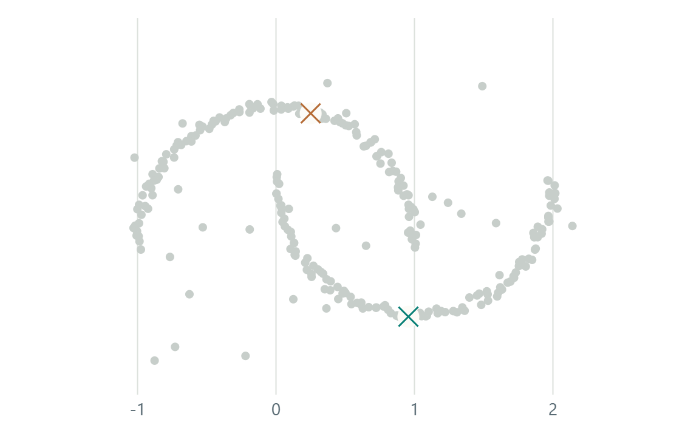
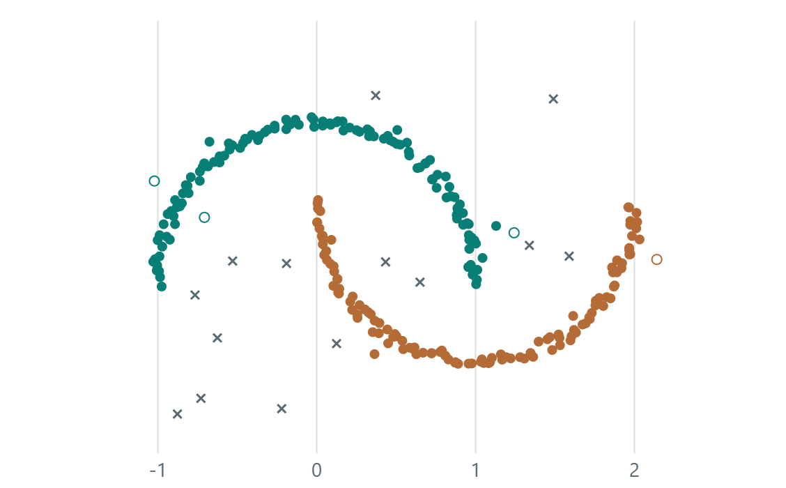

Kříž ve středu označuje centroid. Křížek u DBSCAN označuje šum. Barvy jsou nalezené skupiny, ne správné třídní odpovědi. SSE je součet čtverců vzdáleností bodů od přiřazených středů.A cross at a centre marks a centroid. DBSCAN crosses mark noise. Colours represent discovered groups, not true class answers. SSE is the sum of squared distances to assigned centres.
Pseudokód: K-means: přiřazení a nové středyPseudocode: K-means: assignment and updated centres
Vstupem jsou body a počet k. Počáteční středy vybíráme z k různých bodů pomocí uloženého seedu.Input is the points and cluster count k. A saved seed selects k different points as initial centres.
Zvol k různých počátečních středů
Opakuj:
Přiřaď každý bod k nejbližšímu středu
Pokud se přiřazení nezměnilo: skonči
Každý střed přesuň do průměru své skupiny
Pro prázdnou skupinu ponech původní střed
Vrať přiřazení a středyChoose k distinct initial centres
Repeat:
Assign each point to its nearest centre
If assignments did not change: stop
Move each centre to its group mean
For an empty group, keep its previous centre
Return assignments and centresKlikátko uchovává snímek po přiřazení i po přesunu středů. Vzdálenost je eukleidovská; přiřazení porovnává její čtverec. Omezujeme výpočet na 60 iterací. Změna počátečních středů může vést k jinému lokálnímu řešení.The example records a frame after assignment and after updating centres. Distance is Euclidean; assignment compares squared distances. We cap computation at 60 iterations. Changing initial centres can lead to a different local solution.
Vysvětlení: Středy a hustotaExplanation: Centres and density
K-means začíná k zvolenými středy. Jeden krok přiřadí každý bod k nejbližšímu středu. Další krok přesune každý střed do průměru jeho skupiny. Tím klesá nebo zůstává stejný součet čtverců vzdáleností SSE. Výsledek může záviset na počátečních středech.K-means starts with k selected centres. One step assigns every point to its nearest centre. The next moves each centre to its group mean. This decreases or preserves the sum of squared distances, SSE. The result can depend on initial centres.
DBSCAN na stejných bodech používá ε-okolí a min_samples = 6. Počet shluků předem nevolíme. Tvar zakřivených hustých oblastí může zachovat lépe než dělení podle nejbližších středů. Výsledek posuzujte vzhledem k účelu, metrice a parametrům. Barvy samy neříkají, zda je shluk správně.On the same points, DBSCAN uses ε-neighbourhoods and min_samples = 6. We do not choose a cluster count in advance. It can preserve curved dense regions better than nearest-centre partitions. Judge the result against the task, distance measure and parameters. Colours alone do not establish a correct clustering.
SVM: margin a podpůrné vektorySVM: margin and support vectors
Volitelné pokračování.Optional extension.
Zde už hranici hledá skutečné SVM. Zkuste změnit C, přepnout kernel a u RBF změnit γ. Kroužky kolem trénovacích bodů označují podpůrné vektory.Here a real SVM fits the boundary. Change C, switch the kernel, and adjust γ for RBF. Rings around training points mark support vectors.
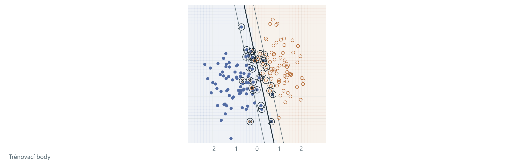
C řídí kompromis mezi širším marginem a penalizací trénovacích chyb. Vyšší γ u RBF znamená lokálnější vliv bodu. Plná čára je hranice, přerušované čáry jsou úrovně ±1. U lineárního SVM mají přímou interpretaci geometrického marginu.C controls the trade-off between a wider margin and penalizing training errors. Larger RBF γ gives each point a more local influence. The solid line is the boundary; dashed lines are levels ±1. For linear SVM, these directly describe the geometric margin.
32 modelů bylo předpočítáno pomocí scikit-learn SVC, vždy pouze na trénovací části. Ovládáním mezi nimi přepínáte. Odložené body slouží k demonstraci generalizace; jejich opakované prohlížení nenahrazuje závěrečný nezávislý test.32 models were precomputed with scikit-learn SVC, each using training points only. The controls select among them. Held-out points illustrate generalization; repeatedly inspecting them does not replace a final independent test.
Pseudokód: SVM: učení a použití modeluPseudocode: SVM: fitting and applying a model
Tento postup učí skutečné SVM. Výběr parametrů oddělujeme od závěrečného testování.This procedure fits an actual SVM. Parameter selection is separate from final testing.
Odděl trénovací, validační a závěrečnou testovací část
Pro zvolený kernel a kandidáty C, případně γ:
Nauč SVC pouze na trénovací části
Parametry posuzuj na validační části
Po volbě parametrů uchovej naučený model
Pro nový bod x:
f ← rozhodovací funkce naučeného modelu
Pokud f(x) > 0: předpověz třídu 1
Jinak: předpověz třídu 0
Závěrečný test použij až pro konečné vyhodnoceníSeparate training, validation and final test data
For the chosen kernel and candidate C, optionally γ:
Fit SVC on the training part only
Assess parameters on the validation part
After selecting parameters, keep the fitted model
For a new point x:
f ← decision function of the fitted model
If f(x) > 0: predict class 1
Otherwise: predict class 0
Use the final test only for final evaluationU naší ukázky jsou jednotlivé modely předpočítané v Pythonu a přepínače vybírají jeden z nich. Odložené body jsou ilustrační kontrola; tento přehled nemá další nedotčený závěrečný test. Podpůrné vektory a chyby pocházejí ze skutečného SVC.Our example precomputes each model in Python and its controls select one. Held-out points provide an illustrative check; this demonstration has no further untouched final test. Support vectors and errors come from the actual SVC.
Vysvětlení: Naučené SVM a generalizaceExplanation: Fitted SVM and generalization
Na rozdíl od ruční geometrie na slidu 4 zde používáme skutečné modely SVC. Jsou naučené pouze na trénovacích bodech. Ovládání přepíná 32 předpočítaných kombinací datasetu, kernelu, C a γ. Kroužky zvýrazňují skutečné podpůrné vektory vrácené modelem.Unlike the manual geometry on slide 4, this example uses real SVC models. They are fitted on training points only. Controls select among 32 precomputed combinations of dataset, kernel, C and γ. Rings highlight the actual support vectors returned by the model.
Rozhodovací funkce f(x) určuje třídu podle znaménka. Hranice je f(x) = 0. U lineárního modelu jsou f(x) = ±1 dvě rovnoběžné přímky a jejich vzdálenost je 2/‖w‖. U RBF jsou zobrazené křivky pouze úrovně rozhodovací funkce; v původní rovině nemají konstantní šířku marginu.Decision function f(x) determines the class by its sign. The boundary is f(x) = 0. For a linear model, f(x) = ±1 are parallel lines with separation 2/‖w‖. For RBF, the displayed curves are decision-function levels; they do not have constant geometric margin width in the original plane.
Vyšší C více penalizuje chyby na tréninku. Vyšší γ u RBF zmenšuje oblast vlivu jednotlivých bodů. Prstenec obsahuje osm záměrně změněných trénovacích štítků. Odložená část vznikla nezávisle a do učení nevstupuje. Chyby na tréninku a na odložených bodech proto mohou reagovat různě.Larger C penalizes training errors more heavily. Larger RBF γ makes individual points influence a smaller region. The ring dataset includes eight deliberately changed training labels. The held-out part was generated independently and does not enter fitting. Training and held-out errors can therefore change differently.
PCA a LDAPCA and LDA
Volitelné pokračování.Optional extension.
PCA vybírá směr podle celkového rozptylu. LDA používá i známé třídní štítky a hledá oddělení tříd vzhledem k jejich vnitřnímu rozptylu.PCA selects a direction using total variance. LDA also uses known class labels and seeks class separation relative to within-class variance.
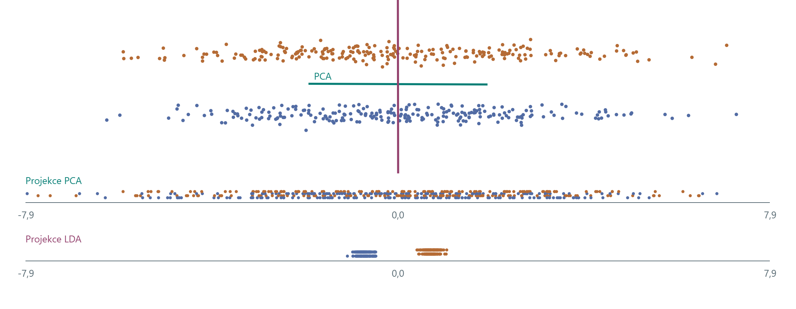
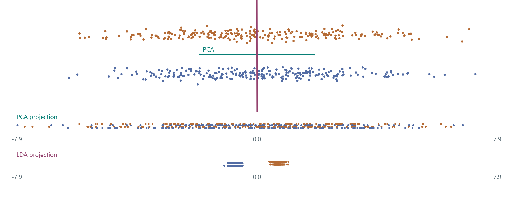
Modré a oranžové body označují skutečné třídy. Směr PCA je zelený, směr LDA fialový. LDA zde používá jeden diskriminační směr pro dvě třídy. Svislé posuny bodů v projekčních řádcích pomáhají čitelnosti.Blue and orange points mark true classes. PCA direction is green, LDA direction purple. Here LDA uses one discriminant direction for two classes. Vertical offsets in the projection rows improve readability.
V tomto příkladu mají třídy velký společný vodorovný rozptyl a malé svislé oddělení. Zobrazené body používáme k výpočtu směrů, nikoli jako nezávislý test klasifikátoru.In this example, classes share large horizontal variation and differ by a smaller vertical shift. These displayed points determine the directions; they are not an independent classifier test.
Pseudokód: LDA pro dvě třídyPseudocode: LDA for two classes
Vstupem jsou body se známými štítky 0 a 1. Pro tuto ukázku je vnitrotřídní kovarianční matice invertibilní.Input is points with known labels 0 and 1. The within-class covariance matrix is invertible in this example.
μ₀, μ₁ ← průměry obou tříd
S_w ← nulová matice 2 × 2
Pro každý bod xᵢ se štítkem yᵢ:
odchylka ← xᵢ − μ_yᵢ
S_w ← S_w + odchylka × odchylkaᵀ
S_w ← S_w / (n − 2)
Vyřeš S_w w = μ₁ − μ₀
u ← w / ‖w‖
Promítni body do směru uμ₀, μ₁ ← means of the two classes
S_w ← zero 2 × 2 matrix
For each point xᵢ with label yᵢ:
deviation ← xᵢ − μ_yᵢ
S_w ← S_w + deviation × deviationᵀ
S_w ← S_w / (n − 2)
Solve S_w w = μ₁ − μ₀
u ← w / ‖w‖
Project the points onto direction uPCA by místo odchylek od třídních průměrů použilo odchylky od společného průměru a štítky by nepotřebovalo. Pro singulární matici S_w bychom potřebovali vhodnou regularizaci nebo jiný numerický postup.PCA would use deviations from the overall mean rather than class means, without needing labels. A singular S_w would require suitable regularization or another numerical procedure.
Vysvětlení: Rozptyl a rozlišení třídExplanation: Variance and class separation
PCA používá rozptyl všech bodů bez ohledu na třídní štítky. V tomto mraku převládá vodorovný rozptyl uvnitř obou tříd. První složka PCA proto může v projekci smíchat dvě svisle oddělené třídy.PCA uses variation across all points without class labels. In this cloud, horizontal variation within both classes dominates. The first principal component can therefore mix two vertically separated classes in projection.
Pro dvě třídy LDA používá směr úměrný S_w⁻¹(μ₁ − μ₀), kde S_w je společná vnitrotřídní kovarianční matice. Zde ji počítáme z odchylek bodů od průměru jejich vlastní třídy a dělíme n − 2. Směr potom normalizujeme na délku 1. Jde o učící příklad rozdílného cíle, nikoli důkaz, že LDA je vždy lepší.For two classes, LDA uses a direction proportional to S_w⁻¹(μ₁ − μ₀), where S_w is the pooled within-class covariance matrix. Here we calculate deviations from each point’s own class mean and divide by n − 2. We then normalize the direction to unit length. This illustrates different objectives, not a claim that LDA is always better.
Zdroje a původní videaSources and original videos
Původní videa sloužila jako podnět pro témata. Autorem je Andrew Tang (@ml.swe). V prezentaci je zastupují vlastní interaktivní výklady, zdrojová videa zde pouze odkazujeme.The original videos inspired these topics. Their author is Andrew Tang (@ml.swe). This presentation uses original interactive explanations and links to the source videos only.
- DBSCAN: density and neighbours · @ml.swe
- PCA: projection and variance · @ml.swe
- Feature lifting and a class boundary · @ml.swe
Grafy i jejich číselné výsledky počítáme z vlastních syntetických dat. Ukázka číslic používá load_digits. K přehrávání výkladu ani ke klikátkům není potřeba Instagram nebo připojení k internetu.Plots and numerical results use our own synthetic data. The digit example uses load_digits. Neither Instagram nor an internet connection is needed for the explanations or interactive examples.
- PCA · scikit-learn
- DBSCAN · scikit-learn
- SVM kernels · scikit-learn
- load_digits · scikit-learn
- Preprocessing a únik informacePreprocessing and data leakage
Vysvětlení: Původ příkladů a význam číselExplanation: Where examples and numbers come from
Původní videa Andrewa Tanga (@ml.swe) najdete v odkazech pod souvisejícími slidy a v seznamu zdrojů. V samotném výkladu používáme vlastní programy a samostatně vytvořené body. Výsledky počítáme z těchto bodů, nikoli z čísel v původních videích. Veškeré ukázky fungují bez připojení.Find Andrew Tang’s (@ml.swe) original videos in the links below the related slides and in the source list. The explanations themselves use our own programs and independently generated points. Results are calculated from these points, not taken from numbers in the source videos. All examples work offline.
Číslice jsou ze skutečné sady load_digits. Hlavní směry jsme naučili na 1 437 trénovacích obrázcích. Z 360 odložených obrázků zde zobrazujeme deset příkladů. Tyto příklady do učení PCA nevstupují. V metodice jsou uvedené zdroje a přesný rozsah výpočtů.Digits come from the real load_digits dataset. We fitted the principal directions on 1,437 training images. We display ten examples from 360 held-out images. Those examples do not enter PCA fitting. Teacher notes document the sources and the scope of the calculations.